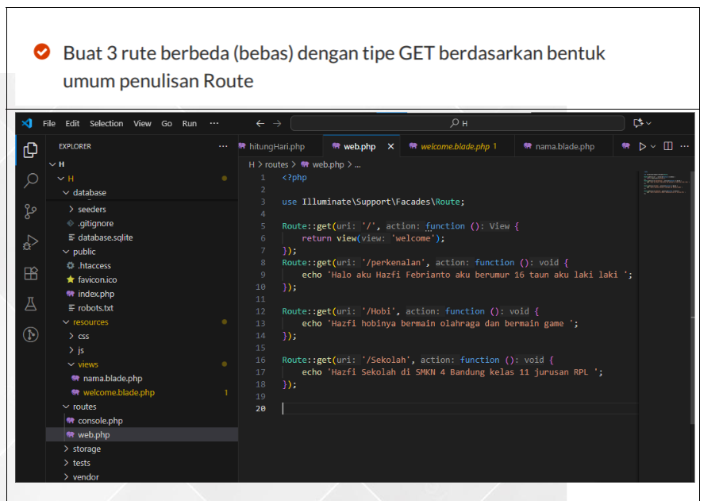
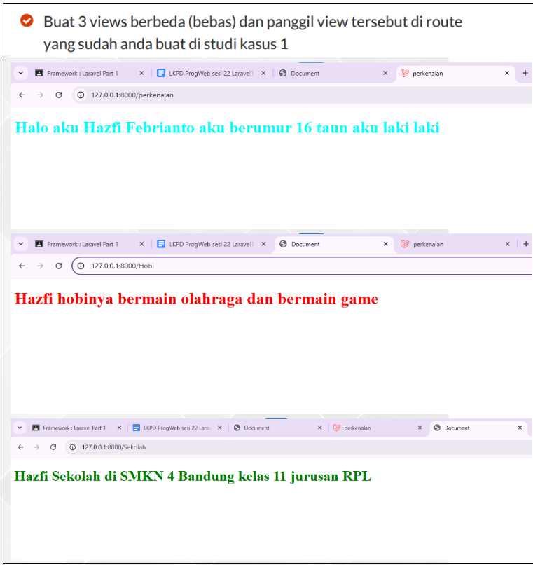

Pengenalan Framework Laravel
Assalamualaikum warahmatullahi wabarakatuh. Perkenalkan, nama saya Hazfi Febrianto. Pada postingan ini saya ingin membagikan hasil belajar saya tentang framework Laravel, sebagai awal dari perjalanan belajar saya dalam membuat project web.
Saya memulai dari pengenalan dasar Laravel terlebih dahulu, lalu mencoba praktik sederhana agar saya bisa memahami alur kerja route, view, dan struktur project dengan lebih baik sebelum masuk ke studi kasus yang saya kerjakan.
Bagian Awal
Pengenalan Framework Laravel
Laravel adalah framework PHP yang memudahkan proses pembuatan website karena memiliki struktur yang rapi, sintaks yang lebih mudah dipahami, dan banyak fitur bawaan yang membantu pengembangan.
Dalam tahap awal pembelajaran, saya mulai mengenal cara kerja route, file view, dan pola penulisan kode yang terorganisir. Dari sini saya mulai memahami bahwa Laravel sangat cocok digunakan untuk membangun aplikasi web secara bertahap dan terstruktur.
Studi Kasus 1
Membuat Route GET Sederhana
Pada latihan pertama, saya diminta membuat 3 route berbeda dengan tipe GET. Tujuan latihan ini adalah agar saya memahami bentuk umum penulisan route pada Laravel.
- Route pertama menampilkan halaman utama atau tampilan awal.
- Route kedua menampilkan perkenalan singkat tentang diri saya.
- Route ketiga menampilkan informasi sederhana seperti hobi atau sekolah.
Dari latihan ini, saya belajar bahwa file web.php berperan penting untuk mengatur jalur akses halaman. Saya juga mulai memahami bagaimana sebuah route bisa langsung menampilkan teks atau memanggil tampilan tertentu.

Studi Kasus 2
Membuat 3 View dan Memanggilkannya di Route
Pada studi kasus kedua, saya melanjutkan tugas dengan membuat 3 file view yang berbeda, lalu memanggil masing-masing view tersebut melalui route yang sudah dibuat sebelumnya.
Melalui latihan ini, saya mulai memahami hubungan antara route dan view pada Laravel. Jadi, route tidak hanya menampilkan teks biasa, tetapi juga bisa diarahkan ke halaman tampilan yang sudah dibuat di dalam folder view.
- View pertama menampilkan halaman perkenalan.
- View kedua menampilkan halaman tentang hobi.
- View ketiga menampilkan halaman tentang sekolah.
Dari studi kasus ini, saya belajar bahwa tampilan pada Laravel bisa dibuat lebih rapi karena isi halaman dipisahkan ke file view masing-masing. Hal ini membuat project lebih mudah diatur dan lebih enak dikembangkan.

Studi Kasus 3
Analisis Cara Mengirim Data ke View
Pada studi kasus ketiga, saya mempelajari dua cara untuk mengirim data dari route ke view pada Laravel. Tugas ini tidak hanya membuat saya menulis kode, tetapi juga menganalisis perbedaan cara penulisan dan kelebihan masing-masing metode.
Cara pertama adalah mengirim data langsung melalui fungsi view() dalam bentuk array. Cara ini cocok jika data yang dikirim ingin ditulis sekaligus dalam satu bagian.
Contoh cara 1
Route::get('/perkenalan', function () {
return view('perkenalan', [
'nama' => 'Hazfi',
'kelas' => 'XII RPL'
]);
});Cara kedua adalah menggunakan with(). Dengan cara ini, data bisa dikirim satu per satu dan penulisannya bisa dirangkai. Metode ini terasa lebih fleksibel jika data yang ingin dimasukkan bertambah secara bertahap.
Contoh cara 2
Route::get('/perkenalan', function () {
return view('perkenalan')
->with('nama', 'Hazfi')
->with('kelas', 'XII RPL');
});- Cara pertama langsung mengirim data ke view menggunakan array di dalam fungsi view().
- Cara kedua menggunakan with() untuk menambahkan data secara berurutan.
- Letak perbedaannya ada pada gaya penulisan dan fleksibilitas saat mengirim data.
Menurut pemahaman saya, jika data yang dikirim hanya sedikit atau ingin ditulis sekaligus, cara pertama lebih sederhana dan mudah dibaca. Namun jika data ingin diatur satu per satu atau ditambah bertahap, cara kedua terasa lebih rapi dan lebih fleksibel.
Hasil Belajar
Pemahaman yang Saya Dapatkan
Setelah mengerjakan studi kasus pertama, kedua, dan ketiga ini, saya menjadi lebih paham tentang dasar penggunaan Laravel. Walaupun terlihat sederhana, latihan ini sangat membantu saya untuk mengenal alur kerja framework sebelum lanjut ke materi yang lebih dalam.
Ke depannya, saya akan melanjutkan postingan blog ini dengan pembahasan langkah-langkah berikutnya sesuai urutan tugas Laravel yang saya kerjakan.